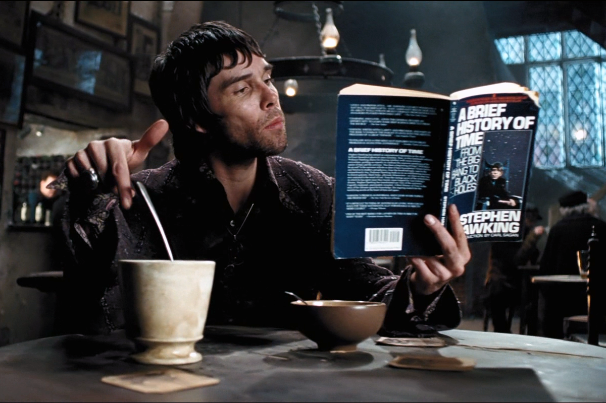

Хокинг был почётным членом Королевского общества искусств, пожизненным членом Папской академии наук, был удостоен Президентской медали Свободы — высшей награды для гражданских лиц в США. В 2002 году в результате опроса Би-би-си по определению ста величайших британцев всех времён Хокинг занял 25-е место. Учёный был Лукасовским профессором математики Кембриджского университета в 1979—2009 годах, добился коммерческого успеха благодаря научно-популярным произведениям, в которых он рассуждает о собственных теориях и космологии в целом. Книга Хокинга «Краткая история времени» входила в список бестселлеров британского издания The Sunday Times на протяжении рекордных 237 недель.

В 1971 году в рамках теории Большого взрыва Хокинг предположил понятие микроскопических чёрных дыр, масса которых могла бы составлять миллиарды тонн и при этом занимать объём протона. Эти объекты находятся на стыке теории относительности (из-за огромной массы и гравитации) и квантовой механики (из-за их размера).

Основная область исследований Хокинга — космология и квантовая гравитация. Его главные достижения:
применение термодинамики к описанию чёрных дыр и разработка в 1975 году теории о том, что чёрные дыры «испаряются» за счёт явления, получившего название излучение Хокинга.

Труды Стивена Хокинга также дали новый толчок к изучению прошлого и будущего всей Вселенной. Достаточно вспомнить его научно-популярную книгу «Краткая история времени», вышедшую в 1988 году. «Мне казалось, что когда начнется сжатие, Вселенная вернется в упорядоченное состояние. В таком случае, с началом сжатия время должно было повернуть вспять. Люди в этой стадии проживали бы жизнь задом наперед и молодели по мере сжатия Вселенной», — заявил ученый. Между тем попытки создать стройную математическую модель, описывающую такие явления, не увенчались успехом, так что Хокингу в конечном итоге пришлось признать свою неправоту.